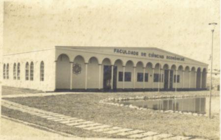
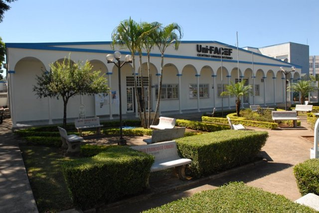

Nossa Missão
O Centro Universitário Municipal de Franca (Uni-FACEF), fundado em 1951, tem como missão construir e difundir o conhecimento, contribuindo para a formação do ser humano com ética e cidadania.
O Trote Solidário é uma iniciativa de responsabilidade social que visa integrar os ingressantes através da promoção da paz e do bem comum, repudiando qualquer ato de violência ou humilhação.


Valores do Evento
- Solidariedade: Participação ativa na solução de problemas da comunidade.
- Respeito: Integração harmônica entre veteranos e calouros.
- Cidadania: Promoção do progresso social e bem-estar coletivo.